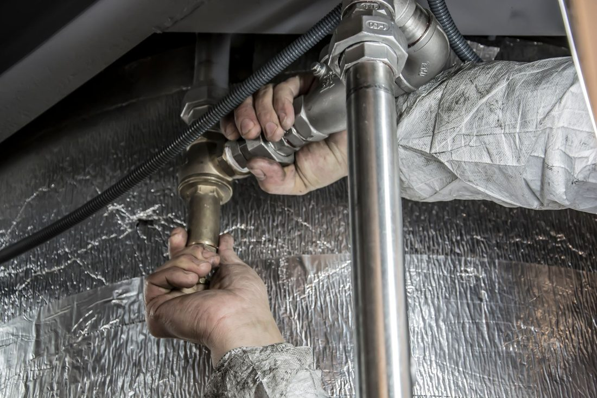

Leckageortung & 24/7‑Notdienst
Zerstörungsarm. Präzise. Schnell vor Ort.
Unentdeckte Leckagen und Feuchtigkeit im Gebäude führen oft zu Wasserschäden, Schimmel und einem ungesunden Wohnklima. Die Ursachen liegen meist verborgen – von defekten Leitungsverbindungen und Rohrbrüchen bis zu Baumängeln.
Schaden melden
Die InTroTech GmbH lokalisiert die Schadensursache punktgenau und zerstörungsarm, um unnötige Stemmarbeiten zu vermeiden und Folgeschäden zu begrenzen. Ob Kalt-/Warmwasserleitung, Heizkreis/Fußbodenheizung, Flachdach oder Abwasserleitung – unsere zertifizierten Messtechniker sind rund um die Uhr für Sie im Einsatz.
Warum schnelle Lecksuche entscheidend ist
Wasser verteilt sich rasch in Wänden, Böden und Dämmschichten. Je länger es verbleibt, desto höher das Risiko für strukturelle Schäden und gesundheitsgefährdenden Schimmel. Unsere schnelle Intervention begrenzt den Schaden, schafft die Grundlage für eine effektive Bautrocknung und beschleunigt die anschließende Sanierung.
So gehen wir vor: Der Ablauf
Erstanalyse & Besichtigung
Sichtprüfung, Aufnahme der Schadenhistorie und Festlegung des Messkonzepts.
Feuchtekartierung (kapazitiv & konduktiv)
Exakte Abgrenzung des betroffenen Bereichs an Wänden, Böden und Decken.
Druckprüfung
Prüfung von Kalt-/Warmwasser- und Heizungsleitungen auf Druckverluste.
Zerstörungsarme Leckortung
Einsatz passender Verfahren (siehe Methodenkatalog) zur punktgenauen Ortung der Ursache.
Dokumentation & Empfehlung
Messprotokolle, Beweisfotos und Ortungsskizzen inkl. klarer Handlungsempfehlung für Trocknung und Instandsetzung.
Koordination der Folgeschritte
Auf Wunsch Abstimmung mit Trocknung, Sanitär/Heizung und Sanierung – für einen reibungsarmen Ablauf.
Unser Methodenkatalog: Modernste Messtechnik
- Thermografie (Wärmebildkamera)
- Visualisierung von Temperaturunterschieden – ideal für Fußbodenheizung und warmwasserführende Leitungen; hilft auch bei Wärmebrücken-Checks.
- Elektroakustische Lecksuche (Horchverfahren)
- Bodenmikrofone & Korrelation erfassen selbst feinste Geräusche austretenden Wassers – präzise auch im Estrich oder in der Wand.
- Tracergas-Verfahren
- Ungefährliches Gasgemisch (N₂/H₂) tritt an der Leckstelle aus und wird oberflächennah detektiert – besonders zuverlässig bei Flachdächern, verzweigten oder erdverlegten Leitungen.
- Endoskopie / visuelle Inspektion
- Flexible Kameras für Hohlräume, Abwasserleitungen und Schächte – direkte optische Beurteilung.
- Chemische / Farbstofftests
- Nachvollziehen von Fließwegen bei Dächern und Abwassersystemen.
- Thermometer & Infrarotmessung
- Schnelle Oberflächentemperaturmessungen zur Verifizierung von Befunden.
Dokumentation & Versicherung
Sie erhalten eine lückenlose, versicherungskonforme Dokumentation in digitaler Form:
- Messprotokolle & Feuchtekartierung
- Beweisfotos und Ortungsskizzen
- Ursachenbewertung und Empfehlung für Trocknung/Instandsetzung
Damit schaffen wir die Grundlage für eine zügige Freigabe durch Ihre Gebäudeversicherung.
Typische Einsatzfälle
- Rohrbruch an Kalt-/Warmwasserleitungen
- Heizkreis / Fußbodenheizung undicht
- Flachdach-/Abdichtungsschäden
- Abwasserleitungen (Austritt/Verstopfung)
- Verdeckte Leitungen im Estrich, in Wänden, Schächten oder Deckenhohlräumen
- Feuchteeintrag über Außenbauteile (z. B. Balkon, Attika, Fensteranschlüsse)